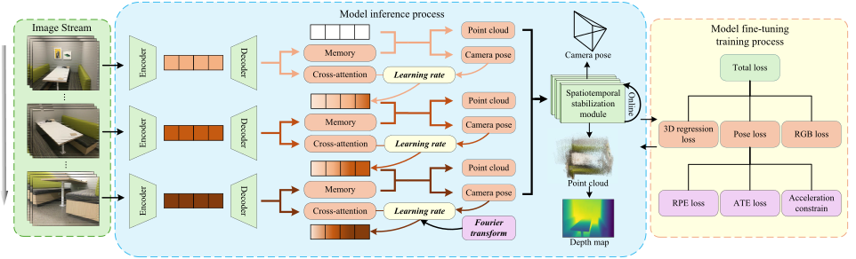
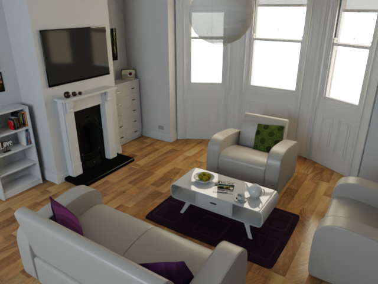
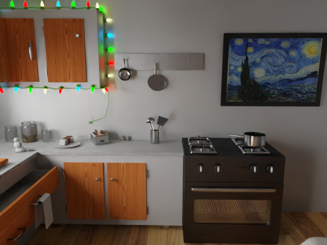
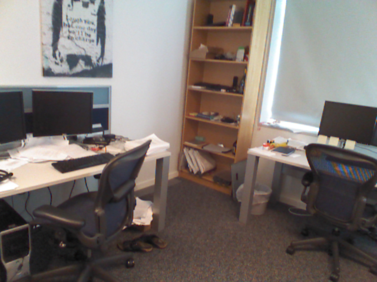
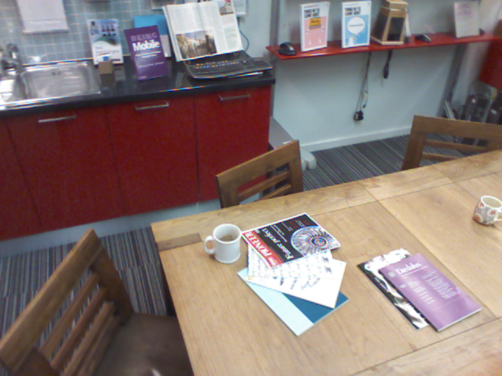

PAS3R: Pose-Adaptive Streaming 3D Reconstruction for Long Video Sequences
arXivOur method overview

We enhance the robustness and long-sequence reconstruction capability of the model via three key components: Pose-Adaptive State Update Modulation, Trajectory-Consistent Model Optimization, and Online Spatiotemporal Stabilization, respectively.
Abstract
Online monocular 3D reconstruction enables dense scene recovery from streaming video but remains fundamentally limited by the stability–adaptation dilemma: the reconstruction model must rapidly incorporate novel viewpoints while preserving previously accumulated scene structure. Existing streaming approaches rely on uniform or attention-based update mechanisms that often fail to account for abrupt viewpoint transitions, leading to trajectory drift and geometric inconsistencies over long sequences. We introduce PAS3R, a pose-adaptive streaming reconstruction framework that dynamically modulates state updates according to camera motion and scene structure. Our key insight is that frames contributing significant geometric novelty should exert stronger influence on the reconstruction state, while frames with minor viewpoint variation should prioritize preserving historical context. PAS3R operationalizes this principle through a motion-aware update mechanism that jointly leverages inter-frame pose variation and image frequency cues to estimate frame importance. To further stabilize long-horizon reconstruction, we introduce trajectory-consistent training objectives that incorporate relative pose constraints and acceleration regularization. A lightweight online stabilization module further suppresses high-frequency trajectory jitter and geometric artifacts without increasing memory consumption. Extensive experiments across multiple benchmarks demonstrate that PAS3R significantly improves trajectory accuracy, depth estimation, and point cloud reconstruction quality in long video sequences while maintaining competitive performance on shorter sequences. Code will be made publicly available.
Evaluation results
Comparison of Online methods. From left to right, the panels show point cloud reconstruction error comparison, camera pose error comparison, and depth error comparison, respectively. Compared with other state-of-the-art online 3D reconstruction methods, PAS3R achieves the best performance across all three evaluation tasks.
Long sequences
Outdoor
Outdoor corridor
Computer Room
Bathroom Scene
PAS3R's depth prediction and reconstruction on long sequences (647-1000 frames).
3D reconstruction on short sequences
Input Image

Ground Truth
PAS3R
Input Image

Ground Truth
PAS3R
Input Image

Ground Truth
PAS3R
Input Image

Ground Truth
PAS3R
BibTeX
@article{YourPaperKey2024,
title={Your Paper Title Here},
author={First Author and Second Author and Third Author},
journal={Conference/Journal Name},
year={2024},
url={https://your-domain.com/your-project-page}
}